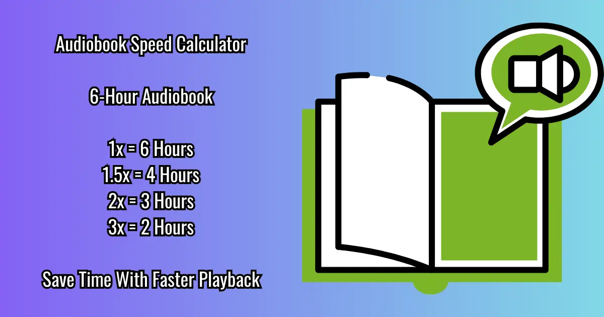

Use this audiobook speed calculator to determine how much listening time you save when increasing playback speed.

Calculate Listening Time
Popular Audiobook Speed Examples
| Original Length | 1.5x Speed | 2x Speed |
|---|---|---|
| 10 Hours | 6h 40m | 5h |
| 20 Hours | 13h 20m | 10h |
| 30 Hours | 20h | 15h |
Related Guides
Frequently Asked Questions
What is the best audiobook speed?
Many listeners prefer between 1.25x and 2x depending on narration style.
How much time does 2x speed save?
Listening at 2x cuts total listening time in half.